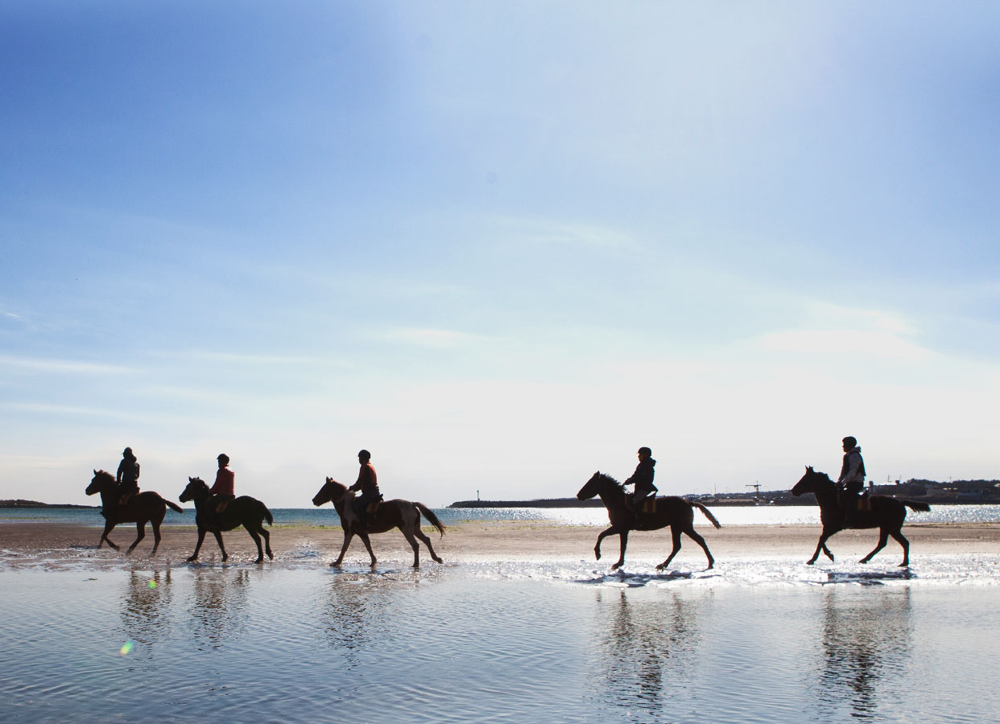
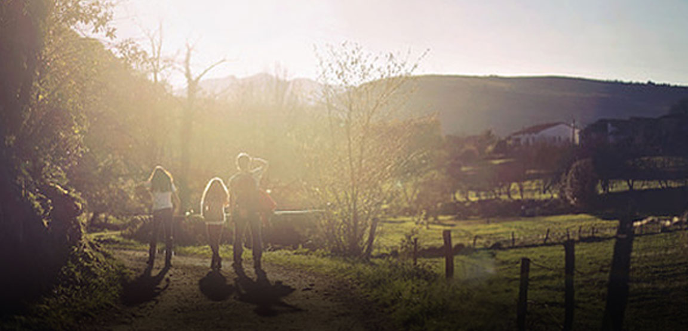
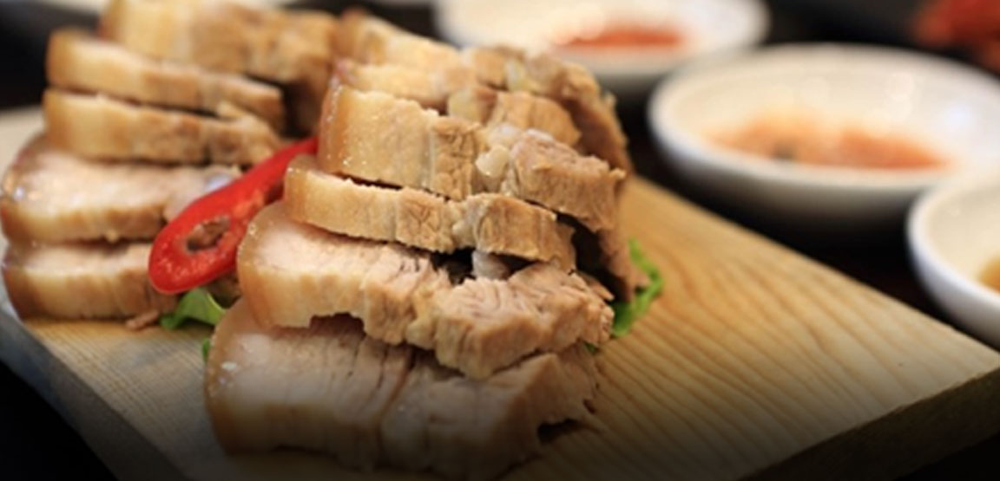

전체메뉴
제주관광공사
검색
신나다
생동하는 자연, 놀라운 영감, 신나는 제주

신나다
생동하는 자연, 놀라운 영감, 신나는 제주
신나다
생동하는 자연, 놀라운 영감, 신나는 제주
다채로운 제주를 만나보세요
매일 새로운 여정이 기다리는 제주도!
산, 바다, 맛 등 당신만의 여행을 경험해보세요!

아이들과 함께하는
가족여행
국내 최초 오리지널 테디베어뮤지엄
제주 테디베어뮤지엄

담백하게 쩌낸 부드러움 돔베고기
헤오름 식당
제주 봄의 시작!
한림공원 튤립축제